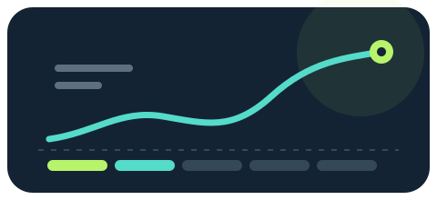
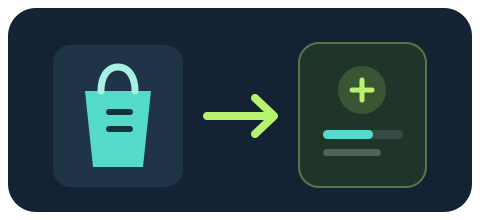

BILAFORM SERVICE
PangaSiku
PangaSiku estimates a daily safe-to-spend amount from the money available after upcoming essentials and a buffer are reserved. The remaining amount is divided by the days until your next income.
Learn moreExplore BilaForm’s practical planning features for budgets, purchases, small expenses and monthly essentials.
Open client portal
PangaSiku estimates a daily safe-to-spend amount from the money available after upcoming essentials and a buffer are reserved. The remaining amount is divided by the days until your next income.
Learn more
Compare a planned purchase with your current balance and essential expenses. Use the PangaSiku calculator to see the runway impact of a purchase.
Learn more
Review regular small costs such as snacks, airtime, transport and subscriptions. Compare their frequency and decide which expenses still fit your priorities. BilaForm does not import transactions automatically.
Learn more
VukaMonth helps organise monthly income across food, transport, rent, electricity, water, savings and other essentials, then shows what remains. Save a plan from the client portal.
Learn more